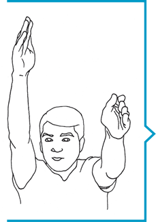
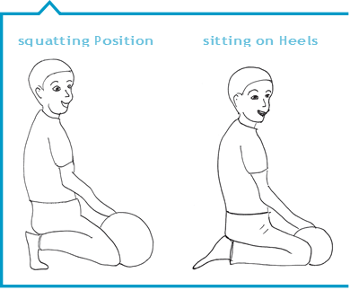
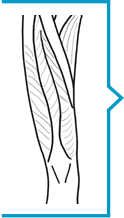
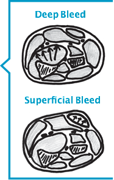
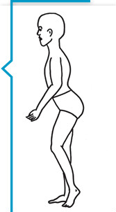
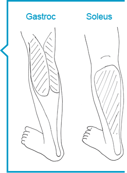
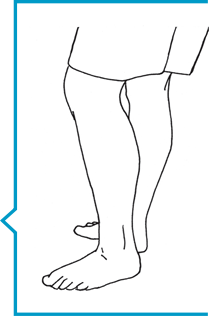
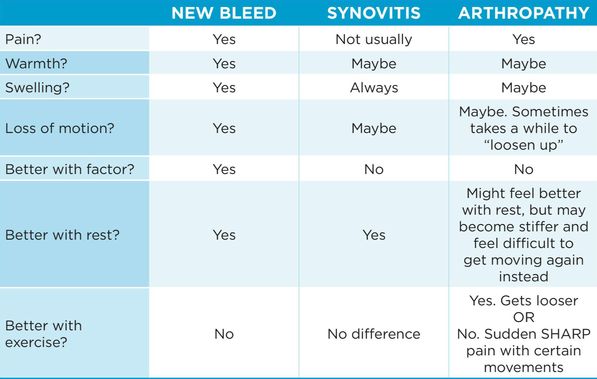

INTRODUCTION
This booklet was designed to help people living with
bleeding disorders identify common joint and muscle bleeds
in their earliest stages, so that proper treatment can begin
as soon as possible.
It is written to help people of
all ages perform a self-assessment and to help parents assess
their children.
This booklet will assist you to:
- stopconfirm the presence and location of common joint and muscle bleeds;
- stopbe aware of potential serious problems that can occur with particular joint and muscle bleeds;
- stopknow when you MUST contact your bleeding disorder treatment centre (Htc);
- stopprovide accurate information to your Htc;
- stopdocument the bleed in your infusion record or bleeding diary.
Prompt recognition and immediate treatment of joint and muscle bleeds is critical to prevent long-term problems. Your bleeding disorder treatment centre will work with you to develop a treatment plan. This might involve travelling to the Htc, or attending a local health care facility, or treating yourself with product in the home.
In addition to using products to stop the bleeding, other techniques such as rest, compression, and avoiding weight-bearing activities are also important to prevent long - term problems. Returning to regular activities, such as sports or work, too soon may delay healing or cause a new bleed. Accurate home care records (infusion logs, bleeding diaries) and regular visits to the hemophilia clinic are also essential components of comprehensive hemophilia treatment.
Disclaimer: This booklet is not intended to replace assessment and treatment by the bleeding disorder treatment centre staff. If you are on a home infusion program, any bleeds that do not resolve after two doses of factor/product must be reported to the hemophilia treatment team immediately.
Authors: this book was originally developed as "Assessment and treatment of Joint and Muscle Bleeds"
in 2000 by Kathy Mulder, physiotherapist with the Manitoba Bleeding disorders Program, children's
Hospital, Winnipeg, Manitoba and reviewed by physiotherapists:
Pamela Hilliard, Hospital for Sick children, toronto - Bethany Lezama, IWK Health centre, Halifax nichan
Zourikian, cHu Sainte-Justine, Montreal
This 2014 version was developed by physiotherapists:
Julia Brooks, Alberta children's Hospital, calgary - carolyn Jarock, IWK Health centre, Halifax Kathy
Mulder, children's Hospital, Winnipeg - Sandra Squire, St. Paul's Hospital, Vancouver, and reviewed by
eric K. and Justin S.
Illustrations by chad Budyk and Kathy Mulder.
Copyright 2014
JOINT BLEEDS
PRINCIPLES
- stopa joint is a place where two bones meet and movement occurs;
- stopbleeds can happen in any joint in the body;
- stopthe most common joint bleeds occur in ankles, elbows and knees;
- stopeven small injuries can start a bleed;
- stopbleeds that are not managed properly, and repeated bleeds into the same joint can cause permanent damage.
EARLY SYMPTOMS OF A JOINT BLEED
A parent may notice that the child is limping, or having difficulty moving a limb.
- The person with the bleeding disorder will notice:
- stopstiffness or a "tingling" sensation;
- stopdiscomfort at rest and with movement.
- Swelling may not be obvious immediately, so it is important to look for:
- stopwarmth over the joint; the joint feels warmer compared to surrounding tissues;
- stoploss of motion compared to the opposite arm or leg OR the usual amount of motion;
- stoptenderness to touch.
- If bleeding continues, there will be:
- stopswelling;
- stoppain;
- stopand possibly redness.
TREATMENT OF A JOINT BLEED
The first aid principles of R-R-I-I-C-E are recommended for all joint bleeds.
R = Replacement of clotting factor. Treat with factor as directed by your treatment centre.
R = Rest. Do not use this joint while it is painful or swollen. Use crutches or a wheelchair when there is a joint bleed in the leg. Use a sling to rest arm bleeds.
I = Ice. Ice may help to decrease pain. An ice pack, gel pack or crushed ice can be used. Always wrap the ice in a damp towel first; do not apply ice directly to the skin. For best relief, wrap the ice completely around the joint. For small joints, leave the ice on for 5-10 minutes; for larger joints, up to 20 minutes may be needed. Reapply the ice every two hours for the first two to three days, or until the pain has decreased. Do not use ice if it is making the pain worse.
I = Immobilization. If the joint is very swollen or if movement is lost, a splint or half cast may be used to protect the joint. Splints can also be useful for young children who may not understand that they need to rest. See page 24 - WHEN TO IMMOBILIZE. Your HTC/physiotherapist will advise you what type of immobilization should be used and for how long.
C = Compression. A tensor bandage or an elastic sleeve will support the joint and help to control the swelling; however compression may not be tolerated if the joint is very tender. Circulation must be watched carefully. If there is any numbness or tingling, remove the compression immediately.
E = Elevation. Keeping the injured part six inches above the level of the heart will decrease the pressure on the damaged blood vessels and help slow the swelling.
FOR ALL JOINT BLEEDS
After any joint bleed, there will be inflammation inside the joint as it heals. This is a normal part of healing and can last for several weeks, even though the joint may look normal and move well. Stopping treatment too soon, or going back to all activities before this inflammation is resolved, may cause a new bleed. Treatment, as directed by your HTC, must be continued until the joint has returned to normal.
ANKLE
- What you may see:
- stopLimping;
- stopWalking on the toes, unable to place heel on ground;
- stopWalking with the foot turned out.
- What you may feel:
- stopWarmth at the front of the ankle joint.
- What you should look for:
- stopSwelling. Is there swelling across the front of the ankle or around the bones at the sides of the ankle?
- stopMovement. Can the foot lift up as high as the other foot? (do this with the knee bent)
- What you should do:
- stopFollow the treatment plan from your HTC:
- - Use factor as directed;
- - Rest the joint. Do not walk on this foot. Use crutches or walker if you are able, or a wheelchair (stroller or wagon for small children);
- - Begin exercises after the bleeding has stopped, as directed by your physiotherapist.
- stopContinue the treatment plan until the ankle returns to its pre-bleed state. For healthy joints, this usually means:
- - The ankle can bend down and up fully, without pain;
- - There is no visible swelling;
- - The ankle does not feel puffy or swollen;
- - There is no pain with weight-bearing;
- - Strength and balance have returned.
KNEE
- What you may see:
- stopA limp, walking with the knee bent;
- stopUnable to straighten and/or bend the knee completely.
- What you may feel:
- stopWarmth at the front of the knee and along the sides of the kneecap;
- stopSwelling around the sides of and above the knee cap.
- What you should look for:
- stopSwelling. Can you see the hollows on either side of the knee cap? Do they look the same as the other knee?
- stopCan the knee straighten out all the way without forcing?
- stopCan the knee bend all the way without forcing?
- What you should do:
- stopFollow the treatment plan from your HTC:
- - Use factor as directed;
- - Rest the joint. Do not walk. Use crutches or walker if you are able, or a wheelchair (stroller or wagon for small children);
- - Begin exercises after the bleeding has stopped, as directed by your physiotherapist.
- stopContinue the treatment plan until the knee returns to its pre-bleed state. For healthy joints, this usually means:
- - The knee can bend fully and without pain;
- - There is no visible swelling;
- - The knee does not feel puffy or swollen;
- - There is no pain with weight-bearing;
- - The thigh muscles are strong.
ELBOW
- What you may see:
- stopReluctance to use the arm and expression of pain with movement;
- stopHolding the elbow bent and close to the body.
- What you may feel:
- stopWarmth at the back of the elbow.
- What you should look for:
- stopSwelling. Are you able to see the hollows at the back of the elbow?
- stopCan the arm straighten out all the way? (Note: many children can straighten the elbow PAST a straight line. Be sure to compare to the other arm.);
- stopCan the elbow straighten completely when the palm is turned up?
- - The elbow is composed of two joints: one that bends and straightens like a hinge and one that allows the forearm to pivot. For small or very early bleeds, each of these movements may appear full if tested alone, but will show loss of motion if both movements are tested together. Your physiotherapist can help you learn what to look for.
- What you should do:
- stopFollow the treatment plan from your HTC:
- - Use factor as directed (If you self- infuse, you may need help with this);
- - Rest the joint. You may need a sling or a splint;
- - Begin exercises after the bleeding has stopped, as directed by your physiotherapist.
- stopContinue the treatment plan until the elbow returns to its pre-bleed state. For healthy joints, this usually means:
- - There is no visible swelling;
- - The elbow does not feel puffy or swollen;
- - The elbow can straighten as far as the other elbow can;
- - The elbow can bend and straighten easily and without pain, even when the palm is turned up.
SHOULDER
- What you may see:
- stopHolding the arm close to the body;
- stopNot using the arm.
- What you may feel:
- stopWarmth along the front of the shoulder.
- What you should look for:
- stopSwelling. Can you feel the hollow at the front of the shoulder? Do the hollows feel the same as the other shoulder or do they feel puffy?
- stopCan you raise your arm forward above your head fully and without pain?
- stopCan you reach your hand behind your head easily and without pain?
- What you should do:
- stopFollow the treatment plan from your HTC:
- - Use factor as directed. (If you self- infuse, you may need help with this);
- - Rest the arm on pillows or in a sling;
- - Begin exercises after the bleeding has stopped, as directed by your physiotherapist.
- stopContinue the treatment plan until the shoulder returns to its pre-bleed state. For healthy joints, this usually means:
- - The arm can be raised forward, over the head, without pain;
- - The arm can be raised out to the side, to the ear, without pain;
- - The hand can reach the back of the head easily;
- - Compare each of these movements to the other arm. Do the movements look the same? It is easy to "cheat" with shoulder movements.
FINGER JOINTS
Bleeds into the small joints of the hand are not common. They are usually the result of direct, known trauma, such as being hit by a ball or getting the finger caught in something and twisted.
In addition to managing the bleeding, it is important to make sure that there is not a broken bone or serious sprain. Be sure to call your HTC for instructions.
- What you may see:
- stopFingers are held in a slightly bent position.
- What you may feel:
- stopWarmth over the joint;
- stopPain with movement.
- What you should look for:
- stopSwelling;
- stopUnable to straighten or bend the finger completely;
- stopPain with movement and tenderness to touch.
- What you should do:
- stopCall your HTC. X-rays may be needed;
- stopFollow the treatment plan from your HTC:
- - Use factor as directed. (If you self-infuse, you may need help with this);
- - Rest the hand; you might need a splint.
- stopContinue the treatment plan until the fingers can bend and straighten completely and with no pain.
TOE JOINTS
Bleeds into the small joints of the toes are not common. They can sometimes occur in children who play in a squatting position or while sitting on their heels.
In older children, teens and adults, toe bleeds are more likely to be the result of banging the foot on an object (stubbing the toe). If there is a known trauma, it is important to make sure there are no broken bones. If there is NO known trauma, contact the HTC to rule out other medical conditions.
- What you may see:
- stopLimping.
- What you may feel:
- stopWarmth over the joint;
- stopPain with movement.
- What you should look for:
- stopSwelling;
- stopLoss of motion. Can the toes curl and straighten fully? (compare to other side).
- What you should do:
- stopContact your HTC. This is an unusual place for a bleed. Further assessment may be needed;
- stopFollow the treatment plan from your HTC:
- - Use factor if it is a bleed;
- - Rest the foot; use a walking aid or wheelchair (stroller or wagon for young children).
- stopContinue the treatment plan until movement is full and you can walk normally without pain.
MUSCLE BLEEDS
PRINCIPLES
- stopAny muscle can bleed;
- stopA bleed in a muscle can occur when a muscle is stretched too far, hit with a hard object, or overworked;
- stopCommon causes of muscle bleeds include:
- - slipping;
- - falling;
- - colliding with a person or an object;
- - lifting something that is too heavy; or
- - doing the same motion over and over.
- stopBleeding starts when small muscle fibers are torn. These injuries heal with scar tissue which is not as flexible as the normal muscle tissue. The muscle must be stretched properly or else it can be re-injured easily.
MUSCLE BLEEDS ARE DIFFERENT FROM JOINT BLEEDS BECAUSE...
Muscle bleeds are less common than joint bleeds. As a result, many people don't have the same understanding about bleeding into muscles: "oh, it's only a pulled muscle". In fact, muscle bleeds can be more serious than joint bleeds because of their complications.
In some large muscles, outside swelling is not always obvious at first, because the blood is not contained to a single area and can seep slowly through different layers of the muscle.
Many of the deeper muscles are wrapped with a tough tissue called fascia, forming compartments. Nerves and blood vessels are also contained in these compartments. Bleeding into these deep muscles quickly fills the compartments, and can cause pressure on the nerves and blood vessels and damage to the muscle.
Some muscles cross more than one joint. Movement at either joint might appear to be normal at first. However, if BOTH joints are tested at the same time the muscle bleed can be confirmed.
EARLY SYMPTOMS OF MUSCLE BLEEDS
A parent may notice that the child is limping, or having difficulty moving a limb.
- The person with the bleeding disorder will notice:
- stopdiscomfort and feeling of stiffness or tingling;
- stoppain if the muscle is stretched;
- stoppain if the muscle is contracted (made to work).
SWELLING MAY NOT BE OBVIOUS IMMEDIATELY, SO IT IS IMPORTANT TO LOOK FOR:
- stopwarmth around the area of the bleed;
- stoptenderness if pressure is applied.
LATER SIGNS
- stoppain even when the muscle is resting;
- stopfirm, tender swelling in the muscle;
- stopPINS AND NEEDLES, TINGLING or NUMBNESS.
If any of these are present, this is a medical emergency. Call your HTC NOW!
TREATMENT OF A MUSCLE BLEED
The first aid principles of R-R-I-I-C-E are recommended for all muscle bleeds.
R = Replacement of clotting factor. Treat with factor as directed by your treatment centre.
R = Rest. Do not use this muscle while it is painful. Crutches, a wheelchair or even bed rest may be needed when there is a bleed in a leg muscle. Use a sling to rest bleeds into the arm muscles.
I = Ice. Ice may help to decrease pain if the muscle bleed is not too deep. An ice pack, gel pack or crushed ice can be used. Always wrap the ice in a damp towel first; do not apply ice directly to the skin.
For best relief, wrap the ice around the muscle. For large muscle bleeds up to 20 minutes may be needed. Re-apply the ice every two hours for the first two to three days, or until the pain has decreased. Do not use ice if it is making the pain worse.
I = Immobilization. If there is a lot of pain and loss of motion, a splint or half cast may be used to allow the muscle to relax. Splints can also be useful for young children who may not understand that they need to rest. See page 24 - WHEN TO IMMOBILIZE. Your HTC/physiotherapist will advise you what type of immobilization should be used and for how long.
C = Compression. A tensor bandage or compression with padding may be used to compress the muscle and help to control the swelling. Circulation must be watched carefully; if there is any numbness or tingling, or if the pain is increasing, remove the compression immediately and notify the HTC.
E = Elevation. Keeping the injured part six inches above the level of the heart will decrease the pressure on the damaged blood vessels and help slow the bleeding until factor can be infused.
FOR ALL MUSCLE BLEEDS
Treatment, as directed by your HTC, must be continued until the muscle is healed completely and its strength is restored. If you return to sports or work too early, there is a good chance that the muscle will re-bleed. It is important to do the correct exercises to regain full strength and flexibility in your muscle. Contact your physiotherapist for recommendations before you go back to regular activities, including sports or work.
PSOAS MUSCLE (or Iliopsoas, pronounced with a silent P)
The psoas muscle is located at the front of the hip joint, deep in the pelvis. It can be injured by a sudden stretch (e.g. stumbling or slipping on ice) or by repetitive use (e.g. sports, sexual activity).
- What you may see
- stopLimping;
- stopWalking on tip-toe OR;
- stopWalking with the knee bent OR;
- stopWalking with the body a bit twisted OR;
- stopWalking with the buttock sticking out more than usual OR;
- stopAll of the above.
- What you may feel:
- stopDiscomfort in the groin area OR the back OR down the front of the thigh;
- stopDifficulty lying flat on your back.
- What you can do to assess:
- stopLie on your back. Start with the hip and knee bent;
- stopGently straighten your leg. Stop if your back starts to arch or if this increases the pain in your groin, thigh, or back.
- What you MUST do:
- stopCall the HTC immediately for instructions;
- stopFollow the treatment plan from your HTC:
- - Use factor as directed;
- - AVOID standing and walking;
- - Do NOT try to use crutches;
- - Do NOT try to drive your car;
- - REST in bed with your leg supported in a comfortable position until you can straighten your hip comfortably without arching your back;
- - Talk to your physiotherapist regarding the best way to REST and immobilize this muscle. It is not possible to use Ice, Compression or Elevation for psoas bleeds because the muscle is too deep.
- What you should watch for:
- stopIf there are any pins and needles or tingling in the thigh, this is serious. It may indicate that the nerves and blood vessels are being compressed. Call the HTC immediately;
- stopIf the muscles that straighten the knee ARE weak, this is very serious. It indicates that the nerve that controls these muscles has been compressed and may be damaged. Call the HTC immediately.
- Returning to activity:
- stop The psoas muscle can be reinjured very easily if it is not rested and then exercised properly;
- stopFollow the treatment plan from your HTC team until recovery is complete;
- stopA supervised program of physiotherapy WILL be necessary to ensure full recovery;
- stopIt may take several WEEKS before the muscle is back to normal;
- stopDo not start walking until the physiotherapist gives you permission;
- stopALWAYS check with your physiotherapist before going back to regular activities, including work or sports.
FOREARM MUSCLES
Groups of muscles are located on the front and the back of the forearm. These muscles move the wrist and the fingers. The muscles on the front of the forearm can be injured by sustained gripping (e.g. biking, playing guitar). The muscles on the back of the arm are often injured by repeated use (e.g. hammering or tennis). Both groups can also be injured by a direct blow such as getting hit by a baseball.
- What you may see
- stopDifficulty using the arm;
- stopPain with gripping or lifting objects.
- What you may feel:
- stopWarmth and tenderness in the soft fleshy part of the forearm;
- stopPain in the forearm if the wrist is bent back and forth.
- What you can do to assess:
- stopThe front (palm) side of the forearm is more commonly the site of bleeding;
- stopCheck flexibility by bending the wrist back while keeping the fingers straight;
- stopIf this is comfortable, gently straighten the elbow. Compare the amount of movement to the opposite arm;
- What you MUST do:
- stopCall the HTC for instructions;
- stopFollow the treatment plan from your HTC:
- - Use factor as directed. (If you self- infuse, you may need help with this);
- - You may require a splint to help rest the muscle.
- stopIf the muscles on the back of the arm are involved, bend the fingers while bending the wrist down;
- stopIf this is comfortable, gently straighten the elbow. Compare to the opposite arm.
- What you should watch for:
- stop"Pins and needles" or tingling in the hand. This is serious and can cause permanent damage if not treated properly. Contact the HTC immediately. The forearm muscles, nerves and blood vessels are all surrounded by a tight and tough covering called fascia. If blood begins to fill this space, the nerves and blood vessels can be compressed. (see illustrations on page 12 - DEEP AND SUPERFICIAL MUSCLE BLEEDS)
- Returning to activity:
- stopSee your physiotherapist and continue your exercises until full flexibility and strength of your wrist AND fingers is restored;
- stopALWAYS check with your physiotherapist before going back to work or sports.
THE CALF
The calf contains a number of muscles. The calf muscles can be injured by a direct blow (e.g. kick), or from overuse during sports or work. The most frequently injured is the one closest to the surface, called the "gastrocnemius" or "gastroc"; it runs from the heel to just above the knee. The next layer of the calf muscle is called soleus. It stops below the knee. Deeper still are the muscles that bend the toes.
- What you may see
- stopLimping;
- stopWalking with the foot turned out;
- stopUnable to walk with the heel flat on the floor.
- What you may feel:
- stopA tight feeling in the lower leg/calf;
- stopTenderness if the calf muscle is squeezed;
- stopSoreness in the muscle if you move your ankle up and down;
- stopFirmness in the muscle.
- What you can do to assess:
- stopCheck flexibility of the muscle and compare to the
other side. In the early stages of a gastroc bleed, ankle movements may be the same in both legs when the knee is in a bent position. However, if the knee is straight there will be more tension on the muscle; ankle movement may be limited and the calf will be painful when stretched.
To confirm the location of the bleed, you will need to test each muscle separately.
- TEST 1
- Sit with knees bent. Try to get both heels flat on the floor. Keeping the heel on the floor, bend the knee and slide the foot back. Compare the movement and the tightness in the calf muscle to other leg. If there is discomfort and the movement is limited, the bleed could be in either the gastroc or the soleus.
- If there is no discomfort with this test, go to test 2.
- TEST 2
- Stand up. Place the heel flat on the floor. Gently straighten knee. If this causes pain in the calf, the bleed is most likely in the gastroc.
- TEST 3
- Very rarely, the bleed is in the deepest muscles, the toe flexors. To con-firm, stand with the heel flat and the knee straight. With the toes flat on the floor, lift the heel. If this produces pain in the calf, the bleed is most likely in the deep flexor compartment. This can be serious.
- What you should do:
- stopCall the HTC for instructions;
- stopFollow the treatment plan from your HTC:
- - Use factor as directed;
- - Rest the muscle: limit standing until you can place the foot flat on the floor without pain in the muscle;
- - Avoid walking, except with crutches or a walker until you can place the heel down easily, without strain;
- - Continue to use crutches until you can walk correctly. You should be able to put your heel down first and put your foot flat, and then push off from your toes.
- What you should watch for:
- stopIf there is any numbness or tingling in the toes, this is serious. Call the HTC immediately;
- stopIf there is severe pain and/or throbbing in the calf, this is serious and could be an emergency. Call the HTC immediately.
- Returning to activity:
- stopDo the exercises as prescribed by your physiotherapist until flexibility and strength are back to normal;
- stopCheck with your physiotherapist before you return to work, especially if your job requires a lot of standing or walking;
- stopCheck with your physiotherapist before running or returning to sports. If the muscle is not flexible or strong enough, it can easily be injured again by running or jumping.
HAMSTRINGS
The hamstring muscles are located along the back of the thigh. Their job is to extend the hip and to bend the knee. They can be injured by a sudden stretch or by overuse. When teenagers go through a growth spurt, these muscles may not be able to stretch enough to keep up with the rapid growth of the bones. This makes them more likely to be injured, especially during sports. Hamstrings can also become tight after knee bleeds because they tighten up to protect the knee.
- What you may see
- stopLimping, with knee held a bit bent, and shorter steps on the sore side.
- What you may feel:
- stopWarmth and tenderness in the back of the thigh. Hamstring bleeds can be quite painful.
- What you can do to assess:
- stopThe hamstrings go across the hip and the knee. It may be possible to straighten the knee completely while the hip is straight, but not when the hip is bent.
- TEST 1
- Standing: can the knee go completely straight without discomfort at the back of the thigh? If no, begin your treatment plan. If yes, proceed to test 2.

- TEST 2
- Sit on a chair, with your back straight. Slowly and gently straighten the knee, until a pulling sensation is felt in the back of the thigh. Compare the amount of movement and discomfort to the other leg.
- What to do:
- stopFollow the treatment plan from your HTC:
- - Use factor as directed;
- - Limit walking, even with a walking aid, until flexibility testing is comfortable;
- - If you are using a walking aid, you can rest your foot on the floor to take the strain off the muscle but you should not put your full weight on the foot.
- What you should watch for:
- stopHamstring bleeds can be quite painful. Depending on the location of the bleed, it may be difficult to sit comfortably.
- Returning to activity:
- stopHamstrings are re-injured very easily, even in professional athletes, if they are not rested and then stretched and strengthened properly. A supervised program of physiotherapy WILL be necessary to ensure full recovery;
- stopCheck with your physiotherapist before going back to any type of running.
QUADRICEPS
The quadriceps muscle (quads) is a group of four muscles located on the front of the thigh. Their main job is to extend the knee; the most superficial of these muscles also helps to bend the hip. The quads can be injured by a sudden forceful stretch, such as during sprinting without warming up first. More frequently, they are injured by a direct blow- e.g. contact with a baseball, or another player’s knee.
- What you may see
- stopLimping, with shorter steps on that side;
- stopDifficulty bending the knee.
- What you may feel:
- stopTenderness and possibly warmth in the heart of the muscle.
- What you can do to assess:
- TEST 1
- Try bending the knee all the way (slide heel towards buttocks). If the bleed is large and involves the deeper muscles this will be uncomfortable. If only the superficial muscle is injured, you may need to use the next test to confirm.
- TEST 2
- Lie on your back, near the edge of your bed. Bend your opposite knee up to keep your back flat. Gently, let the sore leg bend over the edge of the bed. If there is a bleed into the quads, the hip may bend up, and the pain in the thigh will increase as the knee is bent.
- What you should do:
- stopFollow the treatment plan from the HTC:
- - Use factor as directed;
- - Do not walk on the injured leg. Use crutches or a wheelchair;
- - The physiotherapist may recommend compression or splinting;
- - After the bleeding has stopped, begin exercises as directed by your physiotherapist;
- - Continue the exercises until the muscle is flexible and strong.
- What to watch for:
- stopQuadriceps bleeds can swell a huge amount, and heal with scarring or even calcification (calcium deposits in the muscle) which will limit motion.
- Returning to activity:
- stopQuadriceps bleeds usually need a supervised program of physiotherapy to assist recovery and regain full flexibility;
- stopCheck with your physiotherapist before going back to work, and before resuming running or sports.
GLUTEAL MUSCLES (buttocks)
These large fleshy muscles can be injured by falling backwards and landing directly on the buttocks. It is a common site of bleeding in toddlers who are just learning to walk. A bleed into the buttocks can also occur in adults who slip and fall on stairs or on ice.
- What you will see
- stopUnable to sit comfortably;
- stopDifficulty bending the hip;
- stopA mild limp, with shorter steps on that side.
- What you will feel:
- stopTenderness and a lump in the heart of the muscle.
- What you can do to assess:
- stopTry to bend the hip (knee toward chest). A pulling sensation in the buttock may indicate a bleed;
- stopThere may also be a visible dif- ference in the contour of the two sides of the buttocks
- What you should do:
- stopContact the HTC and follow the treatment plan:
- - Use factor as directed;
- - Do not walk on the injured leg. Use crutches;
- - Avoid sitting until the tenderness decreases;
- - After the bleeding has stopped, begin exercises as directed by your physiotherapist.
- What to watch for:
- stopButtocks bleeds can swell a large amount and take a long time to heal completely.
- Returning to activity:
- stopAvoid activities that could re-injure the muscle while it is healing. Use extra padding to protect toddlers;
- stopCheck with your physiotherapist before going back to running, sports or returning to work.
WHEN TO IMMOBILIZE
Bleeds that are caught early may not need to be immobilized if the individual can rest adequately.
- However, immobilization may be recommended in the following situation:
- stopChildren, who may be too young to use walking aids or to understand the need to "rest".
- stopJoint bleeds where there is visible swelling, pain and restricted motion.
- stopMuscle bleeds (especially forearm, hamstrings, calf muscles), if there is pain and difficulty with movement. Splints for muscle bleeds should be changed every few days as the muscle heals and flexibility improves.
Always contact the HTC physiotherapist for recommendations about when and how to use immobilization.
A half cast or removable splint is better than a full cast which could cut off circulation if the swelling increases. A splint should be left on for only two-three days and then the motion should be re-checked. More rest may be necessary to allow complete healing. However, longer periods of immobilization will lead to weakness and leave the area at risk for a new injury. You should see the physiotherapist for recommendations about exercise during and after immobilization.
If there are pins and needles or tingling which suggest nerve compression, contact your HTC immediately. Nerve compression should be treated as an emergency to prevent permanent damage. Observation in hospital may be recommended.
TARGET JOINTS, ARTHROPATHY AND SYNOVITIS
These are terms that refer to chronic problems with joints that have had many bleeds. With prompt and sufficient treatment, we should be able to minimize these conditions. However, if a joint has had some damage, it can be difficult to tell the difference between a new bleed and discomfort from a chronic problem.
Synovitis is irritation and inflammation of the lining of the joint. This is a normal part of the healing process after a joint bleed. However, with repeated bleeds into the same area, the swelling continues and becomes chronic. This is referred to as a target joint. The joint bleeds easily and often.
Arthropathy means "degeneration of a joint". The joint surfaces are worn and the joint can be stiff and painful.
This table will help identify the cause of joint pain and swelling.
If chronic synovitis develops, a new treatment plan must be discussed with the bleeding disorder treatment team. Regular factor, a splint or brace for activities, and an exercise program are all things that should help synovitis get better. Sometimes surgery is necessary.
If arthropathy develops, a new plan must be discussed with the team. Treatment may include regular physiotherapy, medication, splints or braces, activity modification and sometimes surgery.